OKEとWerckerによるCI/CD¶
このエントリーは、OKEとWerckerを利用したコンテナベースのCI/CD(Continus Integration/Delivery)を体験する、ハンズオンチュートリアルです。
このチュートリアルでは、簡単なサンプルアプリケーションを題材に、Kubernetesでアプリケーションを動作させる使用感や、Werckerと組み合わせたコンテナのビルド、テスト、デプロイ自動化を体験することができます。
- Oracle Container Engine for Kubernetes（以下OKE）:
- OracleのマネージドKubernetesサービスです。
- Oracle Container Pipelines Service（以下Wercker）:
- アプリケーションのビルド、テスト、デプロイの自動化をコンテナベースで実現する、CI/CDサービスです。
このチュートリアルを実施するために必要な要件¶
- 各種サービスアカウント
- North America リージョンのDCが有効なOracle Cloud アカウント
- GitHub アカウント
- クライアントPCの環境
- Ubuntu 16.04（Linux/Unix互換のシェルが利用できる環境が必要です。）
- OCI CLIがインストール済みであること
全体の流れ¶
- OKEクラスターの作成と動作確認
- アプリケーションのローカルビルドとローカルでの動作確認
- OCIRへのプッシュとOKEへのデプロイ
- CI/CDパイプラインの作成
- CI/CDパイプラインによる、初期バージョンのデプロイ
- アプリケーションの更新とプルリクエストの発行
- 新バージョンの自動デプロイ
1 . OKEクラスターの作成と動作確認¶
OKEクラスターの作成と動作確認の手順は、「OKEの始め方」を参照してください。このハンズオンは、左記エントリーに従って作成したOKEクラスターを利用するものとして、手順を記載します。
2 . アプリケーションのローカルビルドとローカルでの動作確認¶
ここでは、このハンズオンで利用するサンプルアプリケーションの準備を行います。あらかじめ用意したコードをご自身のアカウントにForkして頂いた上で、そのコードを使ってアプリケーションの動作確認までを行います。
2.1. アプリーケーションのリポジトリをForkする¶
GitHubにアクセスし、ご自身のアカウントでログインしてください（GitHubのアカウントがなければ、事前に作成してください)。

今回利用するサンプルアプリケーションは、oracle-japanのGitHubアカウント配下のリポジトリとして作成してあります。
サンプルアプリケーションのリポジトリにアクセスしたら、画面左上の[fork]ボタンをクリックしてください。

これ以降の作業では、Forkして作成されたリポジトリを利用して手順を進めて行きます。
2.2. ソースコードをCloneする¶
2.1. で作成したリポジトリにアクセスして、[Clone or download]ボタンをクリックします。
ソースコードを取得する方法は2つあります。一つはgitのクライアントでCloneする方法、もう一つはZIPファイル形式でダウンロードする方法です。ここでは前者の手順を行いますので、展開した吹き出し型のダイアログで、URLの文字列の右側にあるクリップボード型のアイコンをクリックします。
これにより、クリップボードにURLがコピーされます。

Linuxのコンソールから、以下のコマンドを実行してソースコードをCloneします。
git clone [コピーしたリポジトリのURL]
続いて、Cloneしてできたディレクトリをカレントディレクトリにしておきます。
cd cowweb-for-wercker-demo
2.3. アプリケーションをビルドする¶
このサンプルアプリケーションは、gradleをビルドツールとして利用する、Javaのアプリケーションです。以下のコマンドを実行すると、アプリケーションをビルドすることができます。
chmod +x ./gradlew
./gradlew build
以下のようにBUILD SUCCESSFULのメッセージで処理が終了していれば、正常にビルドが完了しています。
Starting a Gradle Daemon (subsequent builds will be faster) > Task :test 19:16:46.660 [Thread-5] INFO org.springframework.web.context.support.GenericWebApplicationContext - Closing org.springframework.web.context.support.GenericWebApplicationContext@30923f48: startup date [Wed Oct 17 19:16:41 YAKT 2018]; root of context hierarchy ...（中略）... 19:16:46.701 [Thread-5] DEBUG org.springframework.beans.factory.support.DisposableBeanAdapter - Invoking destroy() on bean with name 'defaultValidator' BUILD SUCCESSFUL in 29s 5 actionable tasks: 5 executed
アプリケーションは単一のjarファイルとして、./build/libsディレクトリに作成されます。以下のコマンドでcowweb-1.0.jarが作成されていることを確認してください。
ls ./build/libs
2.4. アプリケーションの動作確認を行う¶
以下のコマンドを実行して、アプリケーションを起動します。
java -jar ./build/libs/cowweb-1.0.jar
アプリケーションの起動処理が完了したら、新たにコンソールを立ち上げて以下のコマンドを実行します。
curl "http://localhost:8080/cowsay/say?message=Hello%20cowweb"
以下のようなアスキーアートが表示されれば、アプリケーションが正常に動作しています。
______________
< Hello cowweb >
--------------
\ ^__^
\ (oo)\_______
(__)\ )\/\
||--WWW |
|| ||
ここまでで、アプリケーションのローカルでのビルドと動作確認が完了しました。 以降の手順では、このアプリケーションが動作するDockerのコンテナイメージを作成して、OKEクラスター上にデプロイしていきます。
3 . OCIRへのプッシュとOKEへのデプロイ¶
ここでは、サンプルアプリケーションが動作するコンテナイメージを作成し、OCIR（コンテナレジストリ）へのプッシュとOKEクラスターへのデプロイを行います。
3.1. コンテナイメージを作る¶
コンテナイメージは、Dockerfileと呼ばれるコンテナの構成を記述したファイルによって、その内容が定義されます。
サンプルアプリケーションのコードには作成済みのDockerfileが含まれていますので、その内容を確認してみます。以下のコマンドを実行してください。
cat Dockerfile
FROM gradle:jdk8-alpine as builder COPY --chown=gradle:gradle ./build.gradle /home/gradle/ COPY --chown=gradle:gradle ./settings.gradle /home/gradle/ COPY --chown=gradle:gradle ./src /home/gradle/src RUN gradle build -Pbuilddir=build FROM java:8-jre-alpine RUN addgroup -S -g 1000 app \ && adduser -D -S -G app -u 1000 -s /bin/ash app USER app WORKDIR /home/app COPY --from=builder --chown=app:app /home/gradle/build/libs/cowweb-1.0.jar . CMD ["java", "-jar", "/home/app/cowweb-1.0.jar"]
Dockerfileの内容を見ると、FROMで始まる行が2つあることがわかります。最初のFROMから始まる数行は、jdk8がインストールされたコンテナイメージ内にサンプルアプリケーションのコードをコピーし、さらにgradle buildを実行してアプリをビルドしています。
次のFROMから続く一連の処理は、jreがインストールされたイメージを基に、アプリの実行ユーザーの作成、ビルドしてできたjarファイルのコピー、コンテナ起動時に実行するコマンドの設定などを行っています。
それではこのDockerfileを使ってコンテナイメージを作成します。以下のコマンドを実行してください。
docker build -t sample/cowweb:v1.0 .
以下のように、Successfully taggedのメッセージで処理が終了していれば、イメージのビルドは完了です。
Step 1/11 : FROM gradle:jdk8-alpine as builder jdk8-alpine: Pulling from library/gradle 4fe2ade4980c: Pull complete 6fc58a8d4ae4: Pull complete fe815adf554b: Pull complete 56691be5f8bb: Pull complete e7261ab32035: Pull complete Digest: sha256:478f17890f1ac719c37d9e1aa20d22b9cc45ae5b8ae0604f32cf1437a1cdfcca Status: Downloaded newer image for gradle:jdk8-alpine ---> 45b2b256d130 Step 2/11 : COPY --chown=gradle:gradle ./build.gradle /home/gradle/ ---> 4c633cdbbb40 ...（中略）... Step 10/11 : COPY --from=builder --chown=app:app /home/gradle/build/libs/cowweb-0.1.jar . ---> fc5c4137a0e7 Step 11/11 : CMD ["java", "-jar", "/home/app/cowweb-1.0.jar"] ---> Running in aed12b404339 Removing intermediate container aed12b404339 ---> fe2f2527b8d4 Successfully built fe2f2527b8d4 Successfully tagged sample/cowweb:v1.0
実際にビルドされたイメージは、docker image lsコマンドで確認することができます。
docker image ls
REPOSITORY TAG IMAGE ID CREATED SIZE sample/cowweb v1.0 fe2f2527b8d4 2 minutes ago 128MB <none> <none> 088473d4c42c 2 minutes ago 212MB gradle jdk8-alpine 45b2b256d130 3 weeks ago 191MB hello-world latest 4ab4c602aa5e 5 weeks ago 1.84kB java 8-jre-alpine fdc893b19a14 19 months ago 108MB
sample/cowwebの名前のイメージが作成されていることがわかります。
アプリケーションのコンテナイメージは、ソースコードのビルドにはJDK8がインストールされたコンテナを利用し、アプリケーションの実行環境にはJREがインストールされたコンテナを利用しています。このため、jdkやjreといった名前のついたイメージも表示されます。
これらのコンテナは、アプリケーションのコンテナイメージの作成時に、自動的にダウンロードされて利用されています。
3.2. OCIRを利用するための事前準備¶
OCIRはOracleが提供するコンテナレジストリのマネージドサービスです。ここでは、3.1.で作成したコンテナイメージをOCIRにプッシュ（アップロード）します。
OCIRにdockerコマンドからアクセスするため、OCIのユーザーアカウントに必要な設定をしていきます。ブラウザで、Oracle Cloud Infrastructureのコンソールにアクセスしてください。
テナント名を入力する画面が表示された場合は、ご自身が利用するOracle Cloudのテナント名を指定してください。
2種類のログインフォームのある[SIGN IN]画面が表示されたら、右側のフォームにOCIのアカウントのユーザー名、パスワードを入力し、[Sign in]ボタンをクリックします。

OCIコンソールのトップ画面で、画面右上にある人型のアイコンをクリックし、展開したメニューで[user setting]をクリックします。

左側の[Auth Token]をクリックして、トークンの作成画面に遷移します。

[Generate Token]ボタンをクリックします。

[Geterate Token]ダイアログで、トークンの用途を説明する情報（任意の文字列）を入力し、[Generate Toke]ボタンをクリックします。

ダイアログに生成したトークンが表示されます。[Copy]という文字列をクリックするとクリップボードにこのトークンがコピーされます。

このトークンはあとの手順で利用するため、テキストエディタ等にペーストするなどして控えておいてください。
3.3. OCIRにコンテナイメージをプッシュする¶
それでは、コンテナイメージをOCIRにプッシュします。
まず、docker loginコマンドでOCIRにログインします。ログイン先のレジストリを指定するにあたり、ホストされているデータセンターリージョンに合わせて適切なリージョンコードを指定する必要があります。
ご自身の環境に合わせて、下表から適切なリージョンコードを見つけてください。
| リージョンコード | リージョン |
|---|---|
| fra | Frankfurt |
| iad | Ashburn |
| lhr | London |
| phx | Phoenix |
次に、以下のコマンドでOCIRにログインします。
docker login [リージョンコード].ocir.io
ユーザー名、パスワードの入力を求めるメッセージが表示されますので、以下のように入力してください。
- ユーザー名: [テナント名]/[ユーザー名] （例: tenant000123/userA）
- パスワード: [3.2. で作成したトークン文字列]
以下のようにLogin Succeededというメッセージが表示されれば、ログイン成功です。
Username: tenant000123/userA Password: Login Succeeded
続いて、OCIRの形式に合わせてコンテナイメージのタグを更新します。以下のコマンドを実行してくさい。
docker tag sample/cowweb:v1.0 [リージョンコード].ocir.io/[テナント名]/sample/cowweb:v1.0
このコマンドにおいて、[リージョンコード]と[テナント名]は、これまでの手順で指定したものと同じものです。例えば、以下のようなコマンドになります。
docker tag sample/cowweb:v1.0 iad.ocir.io/tenant000123/sample/cowweb:v1.0
この操作によって、コンテナイメージにプッシュ先のレジストリを指定する情報を追加しています。これを行わない場合、コンテナイメージはデフォルトのレジストリが指定されたものとみなされ、Docker社が提供するDocker Hubというレジストリが利用されてしまいます。
これで準備が整いましたので、実際にOCIRにイメージをプッシュします。以下のコマンドを実行してください。
docker push [リージョンコード].ocir.io/[テナント名]/sample/cowweb:v1.0
以下のような実行結果となれば、プッシュが成功しています。
The push refers to repository [iad.ocir.io/tenant000123/sample/cowweb] d07a2053e8fb: Pushed 93ed7a751af8: Pushed 20dd87a4c2ab: Pushed 78075328e0da: Pushed 9f8566ee5135: Pushed v1.0: digest: sha256:5769c194f3861f71c9fd43eb763813676aaba0b41acf453fb6a09a1af7525c82 size: 1367
3.4. OKEへのデプロイ¶
それでは、いよいよOKEクラスターにアプリケーションのコンテナをデプロイします。
OKEを始めとして、Kubernetesのクラスターにコンテナをデプロイするには、クラスター上の配置情報をmanifestと呼ばれるファイルに記述しておく必要があります。
サンプルアプリケーションのコードには作成済みのmanifestファイルが含まれていますので、その内容を確認してみます。以下のコマンドを実行してください。
cat ./kubernetes/cowweb.yaml
apiVersion: apps/v1 kind: Deployment metadata: name: cowweb spec: replicas: 2 selector: matchLabels: app: cowweb strategy: type: Recreate template: metadata: labels: app: cowweb version: v1.0 spec: containers: - name: cowweb image: iad.ocir.io/gse00014510/acme-web-app/cowweb:v1.0 ports: - name: api containerPort: 8080 ...（以下略）...
このファイルによって、サンプルアプリケーションのコンテナが、クラスター上にどのように配置されるかが定義されています。例えば、6行目にあるreplicas:2という記述は、このコンテナが、2つ立ち上げられて冗長構成を取るということを意味しています。
Note
実際にKubernetes上でコンテナが動作する際には、Podと言われる管理単位に内包される形で実行されます。上記のmanifestでは、サンプルアプリのコンテナを内包するPodが、2つデプロイされることになります。
20行目には、実際にクラスター上で動かすコンテナイメージが指定されています。現在の記述内容は、ご自身環境に合わせた記述にはなっていませんので、この部分を正しい値に修正してください。具体的には、3.3.でdocker pushコマンドを実行する際に指定した文字列と同じ内容にすればOKです。
例えば、以下のような文字列となります。
iad.ocir.io/tenant000123/sample/cowweb:v1.0
上記の他にcowweb-service.yamlというも用意してあります。こちらの内容も確認してみます。
cat ./kubernetes/cowweb-service.yaml
apiVersion: v1 kind: Service metadata: name: cowweb spec: ports: - name: http port: 80 targetPort: 8080 selector: app: cowweb type: LoadBalancer
このmanifestファイルは、クラスターに対するリクエストのトラフィックを受け付ける際のルールを定義しています。type: LoadBalancerという記述は、クラスターが可動している環境（ここではOracle Cloud）のLoadBancer機能を利用して、外部からアクセスできるipAdressを提供することを意味しています。
それでは、Kubernetes上でサンプルアプリケーションのコンテナを動かしてみます。以下のコマンドを実行すると、manifestファイルをクラスターに適用する指示が送られます。
kubectl apply -f ./kubernetes/cowweb.yaml
kubectl apply -f ./kubernetes/cowweb-service.yaml
以下のコマンドを実行して、リソースの構成が完了しているかどうかを確認することができます。
Podの状況
kubectl get pod
以下のように、すべてのPodのSTATUSがRunnigになっていればOKです。
NAME READY STATUS RESTARTS AGE cowweb-6b9846fbf6-5h7mh 1/1 Running 0 6m cowweb-6b9846fbf6-4e8sb 1/1 Running 0 6m
Serviceの状況
kubectl get service
以下のように、cowwebという名前のServiceのEXTERNAL-IPに、なんらかのIPアドレスが表示されていればOKです。
NAME TYPE CLUSTER-IP EXTERNAL-IP PORT(S) AGE cowweb LoadBalancer 10.96.214.70 129.213.189.200 80:31205/TCP 1m kubernetes ClusterIP 10.96.0.1 <none> 443/TCP 19d
このEXTERNAL-IPの値は次の手順で利用するため、テキストエディタ等にペーストするなどして控えておいてください。
これでクラスターへのデプロイは完了しましたので、実際に動作確認してみます。以下のコマンドを実行してください。
curl "http://[EXTERNAL-IPの値]/cowsay/say?message=Hello%20cowweb"
ローカルで動作確認したときと同様、以下のようなアスキーアートが表示されれば、アプリケーションが正常に動作しています。
______________
< Hello cowweb >
--------------
\ ^__^
\ (oo)\_______
(__)\ )\/\
||--WWW |
|| ||
おめでとうございます。これで、OKEクラスターで実際にアプリケーションを動かすことができました！
5 CI/CDパイプラインの作成¶
5.1 GitHubアカウントでWerckerにログイン¶
- 5.1.1 先ず、werckerのホームページ(https://app.wercker.com)にアクセスする。

- 5.1.2 "LOGIN WITH GITHUB"をクリックして、GitHubのログイン画面に遷移する。

- 5.1.3 GitHubのアカウントとパスワードを入力して、"Sign in"をクリックして、werckerの画面に戻る。
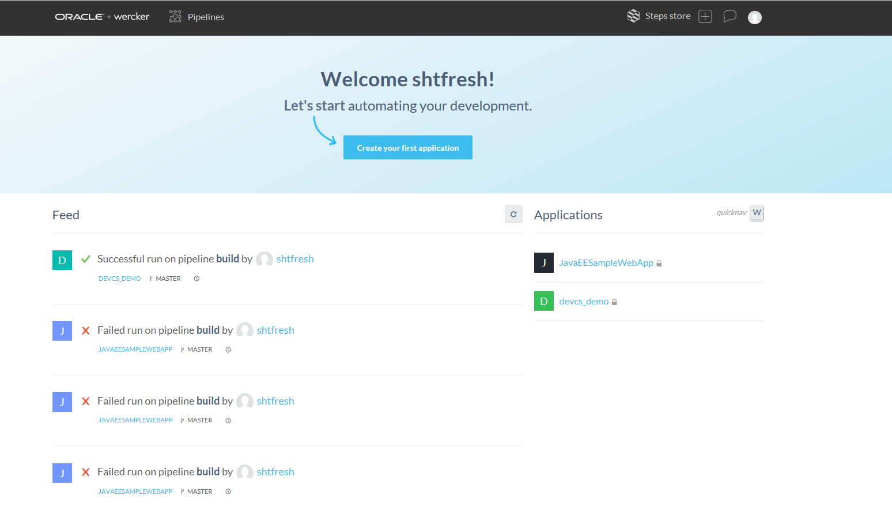
5.2 wrecker.yamlの作成¶
- 5.2.1 先ず、事前準備したプロジェクトのル—トディレクトリでwrecker.yamlを作る。
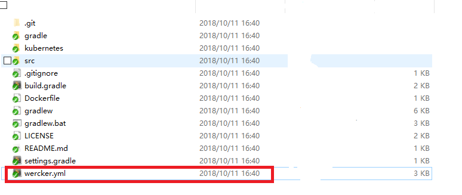
-
5.2.2 次、wercker.yamlの内容を埋め込む。
-
5.2.2.1 docker imageの基本情報を設定する。ベースイメージはopenjdk:8-jdk、portは8080を指定する。
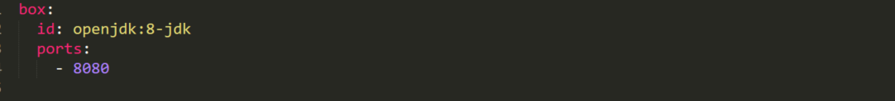
- 5.2.2.2 今回は四つのステップを作る予定である。(werkerパイプラインを作るときは必要) リソースをビルドして、jarファイルを生成するために、buildステップを作る。
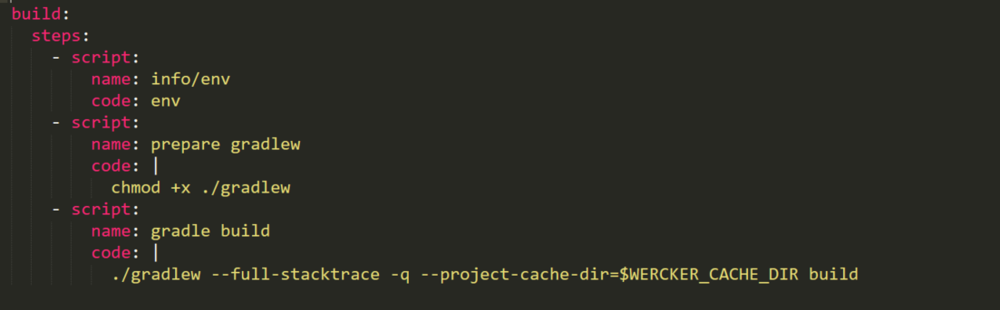
- 5.2.2.3 テストするため、integration-testステップを作る。
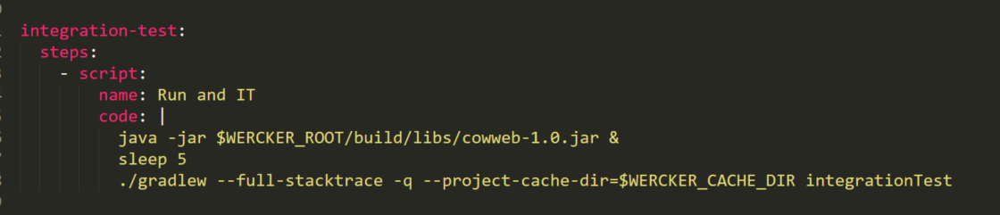
- 5.2.2.4 ビルドしたdocker imageをdockerリポジトリにプッシュするため、push-to-releasesステップを作る。
- ユーザー名、パスワード、リポジトリのアドレスなどの情報が必要である。
- 今回はオラクルのOCIR(オラクルのdocker リポジトリ)を利用するため、respositoryのところはOCIRのアドレス:iad.ocir.io/[テナント名]/[ネームスペース名]/cowwebを入力する。
- 後でusernameとpasswordはweckerの管理画面で環境関数として登録する。
- tagとportsを適当に設定する(下図のように入力してもOKです)。
- cmdはdocker imageを起動する時に実行するコマンドを指定する(下図のように入力してもOKです)。
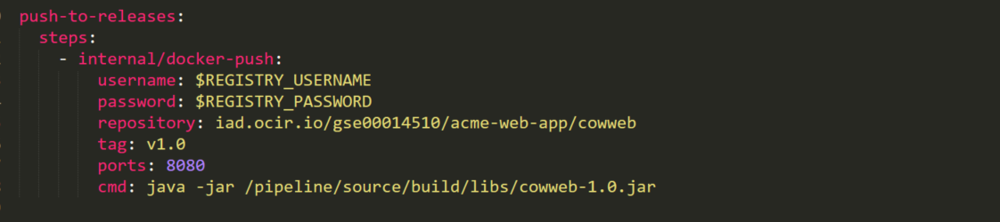
- 5.2.2.5 最後はdeploy-to-clusterステップを作る。リポジトリにプッシュしたdocker imageをOKEにデプロイする。
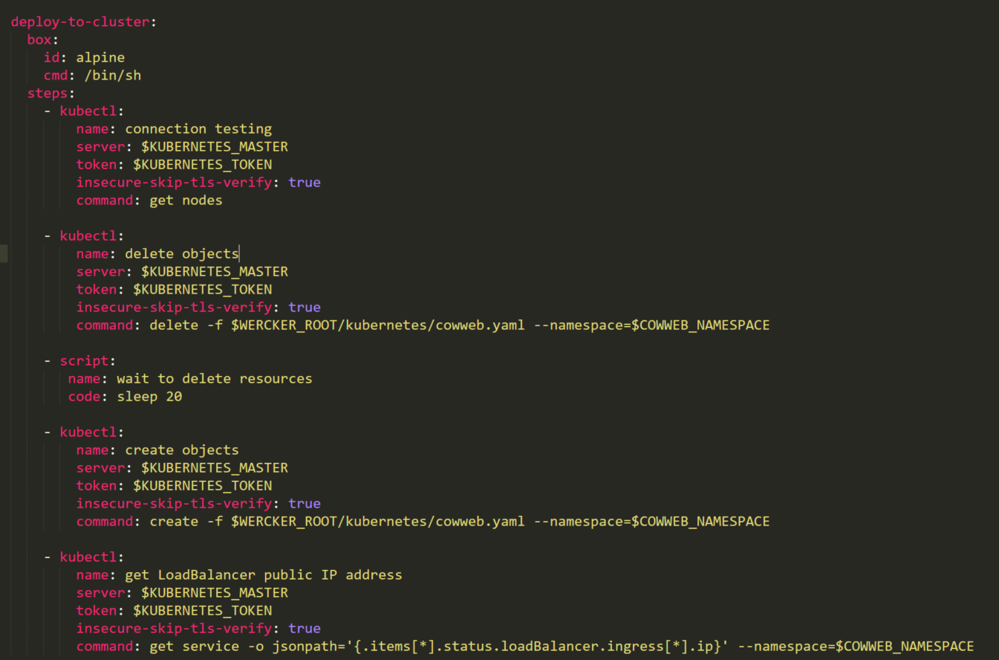
5.3 Werckerのアプリケーションの作成¶
- 5.3.1 werckerサイトにログインした後に下記の画面へ遷移して、"create your first application"ボタンをクリックする。

- 5.3.2 ログインしたユーザーと"GitHub"を選択して、Nextボタンをクリックする。

- 5.3.3 GitHub上のRepositoryを選択して、Nextボタンをクリックする。

- 5.3.4 "wercker will check out the code without using an SSH key"を選択して、Nextボタンをクリックする。

- 5.3.5 入力した情報を確認して、"create"ボタンをクリックする。

- 5.3.6 作成完了画面

5.4 Werckerのパイプラインの作成¶
- 5.4.1 上記画面の"Workflows"タブをクリックして、Workflows作成画面が表示される。

- 5.4.2 Add new pipelineをクリックして、下記の画面へ遷移する。NameとYML Pipeline nameを入力して、"create"ボタンをクリックする(YML Pipeline nameとwercker.yaml中のstep名は一致する)。

- 5.4.3 すべてのパイプラインを作成した後の様子。

5.5 作成したパイプラインをワークフローに追加する¶
- 5.5.1 下図の赤い枠内の"+"をクリックする。

- 5.5.2 On branch(es)の所で"master"を入力して、Execute pipelineのところでpush-to-releasesを選択する(GitHubのmaster分岐が更新される時にwercker.yaml中のpush-to-releasesステップ内のソースを実行する)。

- 5.5.3 作成した後の画面

- 5.5.4 同じようにdeploy-to-clusterを追加する。

- 5.5.5 作成した後の画面である。次は違う分岐にintegration-testを追加する予定ですから赤い枠内の"+"をクリックする。

- 5.5.6 最後はintegration-testを追加する。今回は違う分岐に追加するため、Not on branch(es)のところで"master"を入力する（GitHub上master分岐以外のリソースが更新される時にwercker.yaml中のintegration-testステップ内のソースを実行する）。

- 5.5.7 作成した後の画面である。ここまで、werckerのパイプラインとワークフローの作成は終わった。

6 CI/CDパイプラインによる、初期バージョンのデプロイ¶
6.1 OKEにデプロイするための接続情報の設定¶
下記の画面で以下の項目を設定する

- KUBERNETES_MASTER -> kubectlの設定ファイル内の記述をコピーしてくるよう指示
- KUBERNETES_TOKEN -> kubectlの設定ファイル内の記述をコピーしてくるよう指示
- COWWEB_NAMESPACE -> ハンズオン講師から支持されたネームスペース名(4.3使ってるnamespaceと一致する)
- REGISTRY_USERNAME-> 「OKEの始め方」で作成したOCIネイティブのユーザーアカウントのユーザー名である
- REGISTRY_PASSWORD->4.2.1で作成したToken内容
6.2 パイプラインの実行¶
- Runsタブに入って、buildをクリックして、次の画面に遷移する。
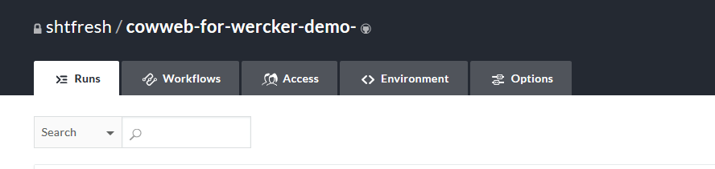
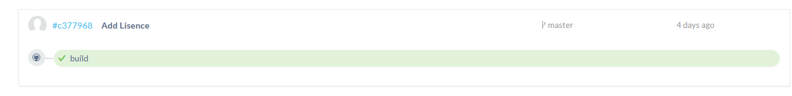
- 下記画面のActionsメニューを開いて、"Execute this pipeline again"をクリックする。
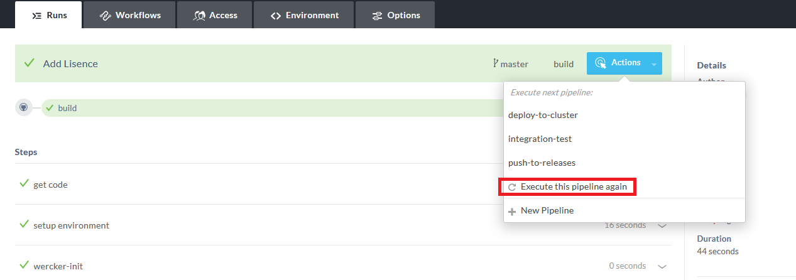
- メッセージを入力して、Execute pipelineボタンをクリックする。
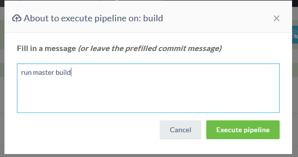
- 実行結果画面
- deploy-to-clusterをクリックして、アプリのipadressを取得する。


6.3 アプリの動作確認¶
- curl "http://129.213.171.101/cowsay/say?message=Hello%20cowweb"
- 下図のような絵が出力すると正しいです。
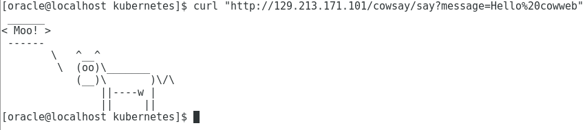
7 アプリケーションの更新とプルリクエストの発行¶
7.1 GitHub上で、アプリケーションのコードを更新¶
- GitHubのレポジトリを開いて、CowsayController.javaを修正する

- 修正した後の様子

- 新規ブランチを作成して、Pull Requestを発行する


8 新バージョンの自動デプロイ¶
8.1 自動でブランチのビルドが実行されることを確認¶
- master以外のブランチにコミットするため、integration-testを自動実行した。

8.2 Pull Requestをマージする¶


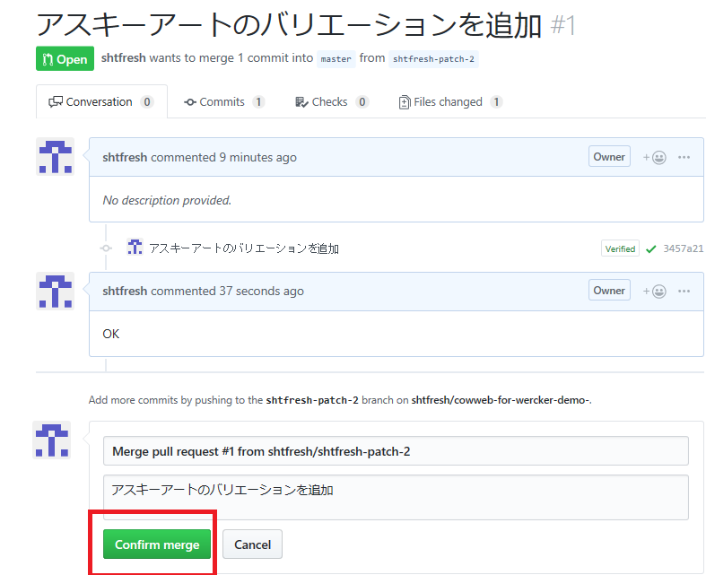
8.3 自動でMasterのビルド、デプロイが実行されることを確認する¶


8.4 アプリの動作確認¶
- curl "http://129.213.171.101/cowsay/say?message=Hello%20cowweb"
- ソースコードが更新されましたので、絵の形は変わりました。
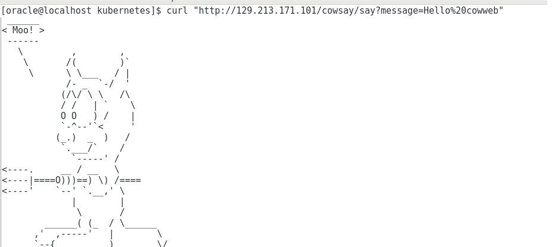
以上で、OKEとWerckerによるCI/CDの手順は完了です。